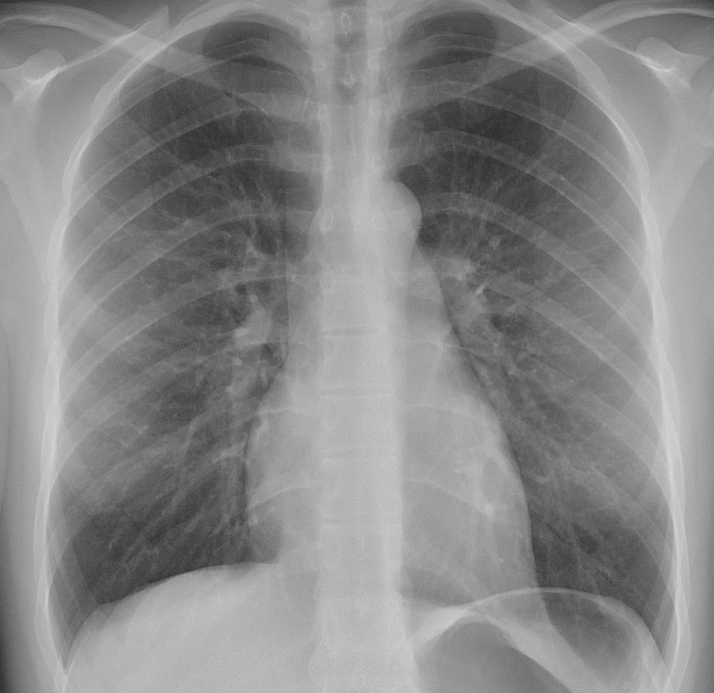
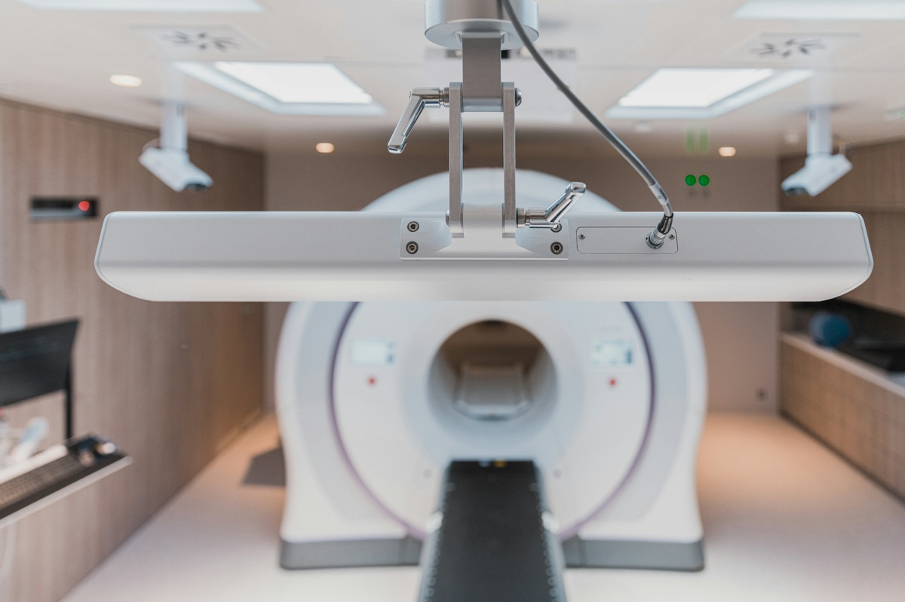
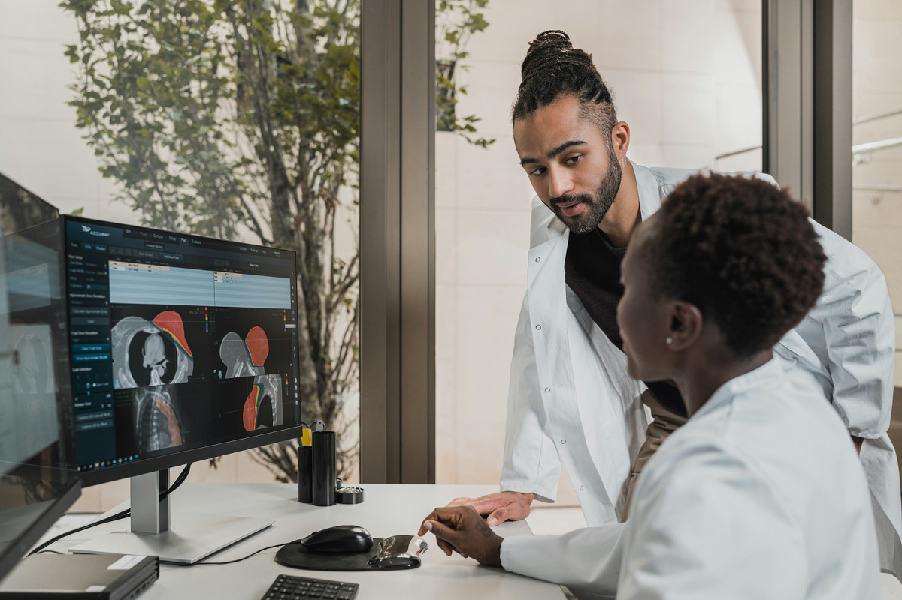

Workflow
End-to-end imaging workflow digitalization
Radture digitizes imaging workflows across facilities, from scan acquisition to reporting and result delivery — replacing CDs, manual handoffs and disconnected systems with one continuous workflow.
For hospitals, diagnostic centers & radiologists
Radture connects hospitals, diagnostic centers, and radiologists into one continuous imaging workflow — eliminating CDs, manual referrals, and fragmented handoffs.

Sample study · ANON-0472 · acquisition to delivery
Built with privacy and security by design, aligned with
Indication
Once a scan leaves the modality, the workflow tends to break into handoffs — discs to burn, referrals to chase, reports waiting on whoever is available. Radture replaces those handoffs with secure, automated workflows across facilities.
TodayFragmented handoffs
With RadtureOne continuous workflow
From scan acquisition to report delivery, Radture reduces delays, improves diagnostic turnaround time and enables effective collaboration — without disrupting existing PACS, RIS or EMRs.
Pathways
Explore how Radture supports different imaging workflows across the care continuum.
Technique
Radture digitizes imaging workflows across facilities and orchestrates each stage automatically, so studies are assigned, read and followed up on reliably.
Studies arrive from your PACS, linked to patient demographics synchronized from the EHR.
Each study is assigned to the right radiologist automatically, based on rules you define.
A smart reporting console with customizable templates keeps every report structured.
Built-in approval workflows support double-reading and final clinical sign-off.
Reports reach clinicians and patients securely, and follow-ups are scheduled so no study is left incomplete.

Findings

Workflow
Radture digitizes imaging workflows across facilities, from scan acquisition to reporting and result delivery — replacing CDs, manual handoffs and disconnected systems with one continuous workflow.
Safety
Automated workflow orchestration ensures imaging studies are assigned, read and followed up on reliably, reducing manual errors and preventing critical findings from falling through the cracks.
Operations
Radture centralizes imaging workflows, referrals and collaboration across organizations, giving teams shared visibility, traceability and control without relying on manual coordination.
Outcomes
By removing operational friction and enabling seamless collaboration across facilities, Radture shortens diagnostic turnaround times, reduces overhead and helps hospitals deliver care more efficiently.
Safeguards
Radture is built with privacy and security by design, aligned with global healthcare and data protection standards.
General Data Protection Regulation
Health Insurance Portability and Accountability Act
Nigeria Data Protection Regulation
Health Level Seven messaging standards
Fast Healthcare Interoperability Resources
International Classification of Diseases, 11th revision
Impression
From in-house reporting to cross-facility referrals, Radture provides a shared imaging workflow backbone that connects hospitals, diagnostic centers and specialists — reducing delays, removing manual handoffs, and enabling faster, more coordinated care.